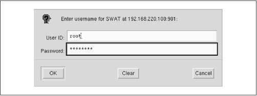
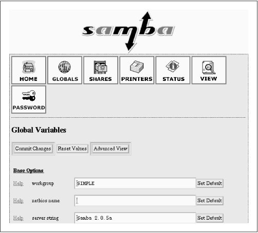
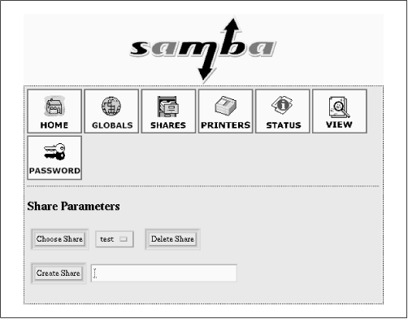
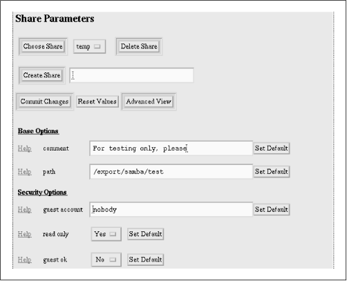

Using Samba
Robert Eckstein, David Collier-Brown, Peter Kelly1st Edition November 1999
1-56592-449-5, Order Number: 4495
416 pages, $34.95
|
|
Using SambaRobert Eckstein, David Collier-Brown, Peter Kelly1st Edition November 1999 1-56592-449-5, Order Number: 4495 416 pages, $34.95 |
2.4 A Basic Samba Configuration File
The key to configuring Samba is its lone configuration file: smb.conf. This configuration file can be very simple or extremely complex, and the rest of this book is devoted to helping you get deeply personal with this file. For now, however, we'll show you how to set up a single file service, which will allow you to fire up the Samba daemons and see that everything is running as it should be. In later chapters, you will see how to configure Samba for more complicated and interesting tasks.
The installation process does not automatically create an smb.conf configuration file, although several example files are included in the Samba distribution. To test the server software, though, we'll use the following file. It should be named smb.conf and placed in the /usr/local/samba/lib directory.[5]
[5] If you did not compile Samba, but instead downloaded a binary, check with the documentation for the package to find out where it expects the smb.conf file. If Samba came preinstalled with your Unix system, there is probably already an smb.conf file somewhere on your system.
[global] workgroup = SIMPLE [test] comment = For testing only, please path = /export/samba/test read only = no guest ok = yesThis brief configuration file tells the Samba server to offer the directory /export/samba/test on the server as an SMB/CIFS share called
test. The server also becomes part of the named workgroup SIMPLE, which each of the clients must also be a part of. (Use your own workgroup here if you already know what it is.) We'll use the[test]share in the next chapter to set up the Windows clients. For now, you can complete the setup by performing the following commands as root on your Unix server:#mkdir /export/samba/test#chmod 777 /export/samba/testWe should point out that in terms of system security, this is the worst setup possible. For the moment, however, we only wish to test Samba, so we'll leave security out of the picture. In addition, there are some encrypted password issues that we will encounter with Windows clients later on, so this setup will afford us the least amount of headaches.
If you are using Windows 98 or Windows NT Service Pack 3 or above, you must add the following entry to the
[global]section of the Samba configuration file:encrypt passwords = yes. In addition, you must use the smbpassword program (typically located in /usr/local/samba/bin/) to reenter the username/password combinations of those users on the Unix server who should be able to access shares into Samba's encrypted client database. For example, if you wanted to allow Unix usersteveto access shares from an SMB client, you could type:smbpassword -a steve. The first time a user is added, the program will output an error saying that the encrypted password database does not exist. Don't worry, it will then create the database for you. Make sure that the username/password combinations that you add to the encrypted database match the usernames and passwords that you intend to use on the Windows client side.2.4.1 Using SWAT
With Samba 2.0, creating a configuration file is even easier than writing a configuration file by hand. You can use your browser to connect to http://localhost:901, and log on as the root account, as shown in Figure 2.1.
Figure 2.1: SWAT login
After logging in, press the GLOBALS button at the top of the screen. You should see the Global Variables page shown in Figure 2.2.
Figure 2.2: SWAT Global Variables page
In this example, set the workgroup field to SIMPLE and the security field to USER. The only other option you need to change from the menu is one determining which system on the LAN resolves NetBIOS addresses; this system is called the WINS server. At the very bottom of the page, set the wins support field to Yes, unless you already have a WINS server on your network. If you do, put the WINS server's IP address in the wins server field instead. Then return to the top and press the Commit Changes button to write the changes out to the smb.conf file.
Figure 2.3: SWAT Share Creation screen
Next, press the Shares icon. You should see a page similar to Figure 2.3. Choose Test in the field beside the Choose Share button. You will see the Share Parameters screen, as shown in Figure 2.4. We added a comment to remind us that this is a test share in the smb.conf file. SWAT has copies of all that information here.
Figure 2.4: SWAT Share Parameters screen
If you press the View button, SWAT shows you the following smb.conf file:
# Samba config file created using SWAT # from localhost (127.0.0.1) # Date: 1998/11/27 15:42:40 # Global parameters workgroup = SIMPLE [test] comment = For testing only, please path = /export/samba/test read only = no guest ok = yesOnce this configuration file is completed, you can skip the next step because the output of SWAT is guaranteed to be syntactically correct.
2.4.2 Testing the Configuration File
If you didn't use SWAT to create your configuration file, you should probably test it to ensure that it is syntactically correct. It may seem silly to run a test program against an eight-line configuration file, but it's good practice for the real ones that we'll be writing later on.
The test parser, testparm, examines an smb.conf file for syntax errors and reports any it finds along with a list of the services enabled on your machine. An example follows; you'll notice that in our haste to get the server running we mistyped
workgroupasworkgrp(the output is often lengthy, so we recommend capturing the last parts with theteecommand):Load smb config files from smb.conf Unknown parameter encountered: "workgrp" Ignoring unknown parameter "workgrp" Processing section "[test]" Loaded services file OK. Press enter to see a dump of your service definitions # Global parameters [global] workgroup = WORKGROUP netbios name = netbios aliases = server string = Samba 2.0.5a interfaces = bind interfaces only = No ...(content omitted)... [test] comment = For testing only, please path = /export/samba/test read only = No guest ok = YesThe interesting parts are at the top and bottom. The top of the output will flag any syntax errors that you may have made, and the bottom lists the services that the server thinks it should offer. A word of advice: make sure that you and the server have the same expectations.
If everything looks good, then you are ready to fire up the server daemons!
 |
 |
 |
| 2.3 Compiling and Installing Samba |
 | 2.5 Starting the Samba Daemons |
© 1999, O'Reilly & Associates, Inc.